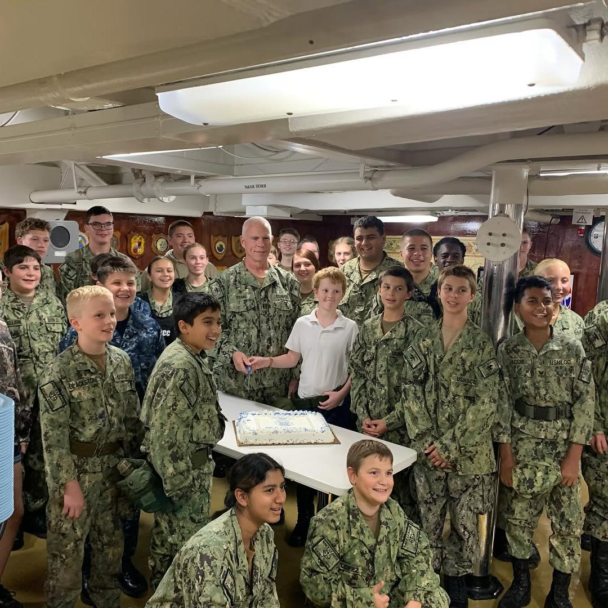

More than a youth program. A place to grow.
The Sullivans Division gives young people a structured, challenging, and supportive place to practice responsibility, teamwork, naval tradition, and service.

What families should know
Clear expectations. Real mentorship. A team that sticks together.
Cadets learn by showing up prepared, following standards, supporting one another, and serving the community. The program is designed to build habits that carry beyond drill weekends.
Discipline
Uniform standards, drill, and accountability teach consistency.
Service
Cadets represent the division through public events and community support.
Confidence
Leadership practice helps young people speak, plan, and act with purpose.
Eligibility
Who Can Join Sea Cadets?
Navy League Cadet Corps
NLCC: Entry Level Program
- Minimum age: 10 years old
- 5th through 8th grade students
- Introduction to naval customs and drill
- Basic seamanship and team skills
- Foundation for advancing to Sea Cadets
Naval Sea Cadet Corps
NSCC: Full Sea Cadet Program
- Minimum age: 13 years old
- 9th through 12th grade students
- Advanced naval and maritime training
- Leadership billets and chain of command
- Summer training programs nationwide
Beyond the basics
Advanced Training May Include
- Seamanship
- Sailing
- Small Boat Operations
- Fleet Week
- Submarine Seminar
- SCUBA Diving
- Aviation Orientation
- Airman Training
- FAA Ground School
- Aviation Maintenance
- Drone Operations
- Shipbuilding
- Trade / Technical Skills
- Special Operations
- Public Safety
- Cybersecurity
- Recruit & Leadership Training
Ready to start?
Your cadet's first step is a simple one.
Send a message to the unit, ask your questions, and get guidance on what to expect before visiting or starting the enrollment process. Families are welcomed and supported every step of the way.